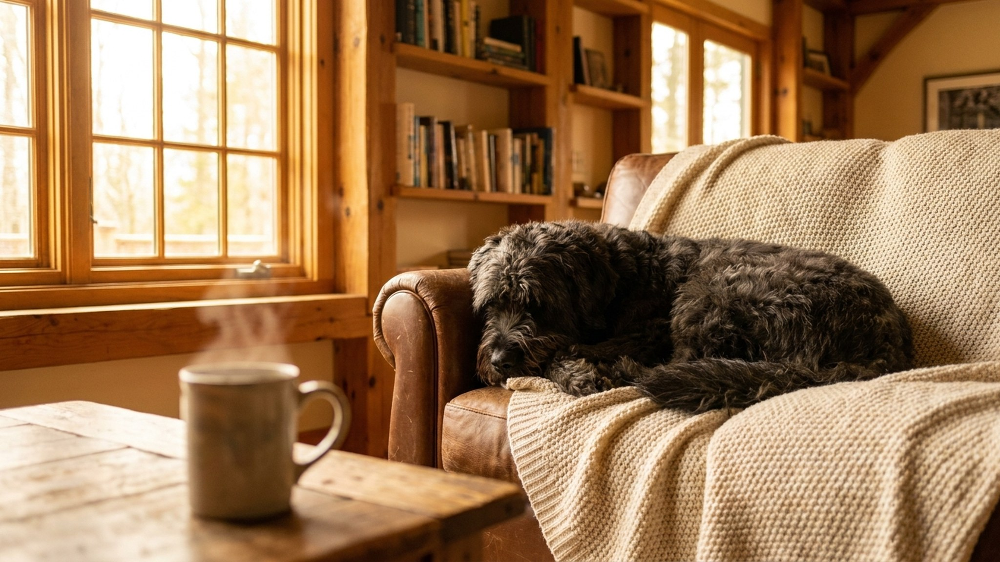

Бувье де Фландр веками гнал скот и работал на фермах Фландрии по 10–12 часов в день. Когда такую собаку берут в квартиру без нагрузки и задач, она находит занятие сама, и это редко нравится хозяину. Ниже: откуда взялась порода, сколько нагрузки ей нужно, как ухаживать за жёсткой бородатой шерстью и на что обратить внимание по здоровью.
🐾 У вас бувье де Фландр?
AnimaLife соберёт уход под породу: к каким болезням есть склонность, что проверять по возрасту, чем кормить и когда пора к врачу. Бесплатно, прямо в мессенджере.
Собрать план ухода → Собрать в MAX →
У вас iPhone? AnimaLife есть в App Store
Бувье де Фландр переводится буквально: «коровий пастух из Фландрии». Порода складывалась на бельгийских фермах начиная с XVII века: нужен был универсальный работник, который гонит скот, тянет телегу и охраняет двор. В Первую мировую бувье служили санитарами и связными, едва не исчезнув вместе с фламандскими фермами.
Характер вырос из этой работы: бувье де фландр уверен в себе, самостоятелен, принимает решения без команды. С последовательным хозяином это ценное качество. С непоследовательным порода начинает брать управление в свои лапы. Нужен человек с опытом и чёткой позицией.
Бувье де фландр не «большая диванная собака». Взрослой особи нужно минимум 2 прогулки по 45–60 минут с активной фазой: трусцой рядом с велосипедом, апортировкой, занятиями по команде. Просто выйти во двор и вернуться обратно нагрузкой не считается.
Щенку до 18 месяцев нагрузку дозируют осторожно: интенсивные прыжки и длинные пробежки по твёрдому покрытию перегружают ещё растущие суставы. Схему нагрузки по возрасту лучше обсудить с ветеринаром.
Шерсть бувье де фландр жёсткая, волнистая, с плотным подшёрстком. Защищает от холода и осадков, но без регулярного ухода быстро сваливается в колтуны.
Бувье де фландр хорошо живёт в семье, если социализация началась в щенячьем возрасте. С детьми уживается, но из-за размера и пастушьего инстинкта может «пасти» маленьких детей, подталкивая их. Ребёнка стоит учить правильно обращаться с крупной собакой, щенка отрабатывать на спокойное поведение рядом с детьми.
По здоровью бувье де фландр разделяет риски крупных пород. На что обращать внимание:
Бувье де фландр живут 10–12 лет. Плановые осмотры раз в год и разговор с ветеринаром при любых изменениях в поведении или самочувствии собаки укрепляют её здоровье на весь этот срок.
🐾 Ваш питомец — бувье де Фландр?
Заведите профиль в AnimaLife: приложение запомнит породу, возраст и вес и будет подсказывать по уходу именно для неё. Вопросы AI-ветеринару — круглосуточно и бесплатно.
Завести профиль → Завести в MAX →
У вас iPhone? AnimaLife есть в App Store
🐾 Понравился разбор?
Подпишитесь на канал — каждый день разбираем по одному тревожному симптому у кошек и собак: что в пределах нормы, а когда пора к врачу. Подпишитесь, чтобы не пропустить разбор, который может спасти здоровье вашего питомца.
Материал носит информационный характер и не заменяет очную консультацию ветеринара.